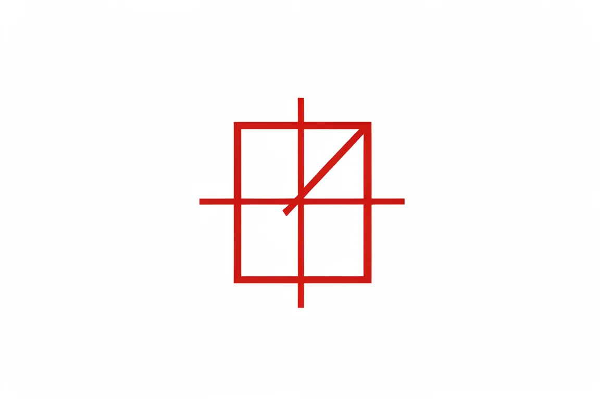

логотипы · 1955–1985 · также: Товарный знак интернационального стиля, Знак фирменного стиля, Модернистский логотип
Знак для всей организации: упрощённый символ на сетке, один-два цвета, логотип неогротеском или авторским гротеском и руководство, которое фиксирует каждый размер, отступ и цвет. Стиль вели железные дороги, авиакомпании и государственные ведомства.

Главная идея
Знак — инструмент системы: он должен быть объективным, воспроизводимым в любом носителе и одинаковым и при 5 мм, и при 5 м.
Принципы дизайна
Рисуйте символ на квадратной сетке 8–16 единиц; каждый край попадает на линию сетки или на шаг в 45°.
Берите штрихи одной толщины, 12–20% высоты символа, без контраста.
Ограничьте знак 1–2 плоскими цветами: один сильный фирменный цвет и чёрный или белый.
Набирайте логотип неогротеском или авторским гротеском с высотой прописных 35–50% высоты символа.
Зафиксируйте в руководстве соединение символа и логотипа; зазор между ними равен единице сетки, умноженной на 2–4.
Задайте охранное поле модулем знака: чаще толщина штриха, умноженная на 2, или половина высоты символа.
Антипаттерны
Изобразительные и иллюстративные символы
Орнамент, тушёвка или текстура
Больше 2 цветов в основной версии знака
Антиквенные или рукописные буквы
Знак, перерисованный от руки под каждое применение